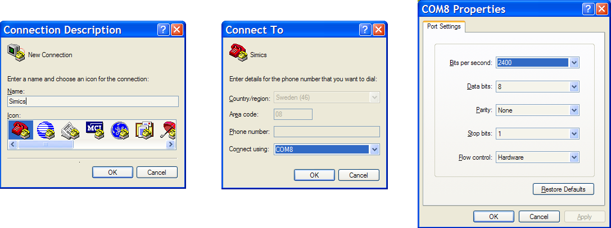

In order to use Simics, you must have images (also called disk dumps) with the operating system and the applications you plan to run. Depending on the type of machine you are using, these images will correspond to the contents of a disk, a flash memory, a CD-ROM, etc. There are some images provided that work with the example machines located in the targets directory.
Simics images are usually stored in a special format called craff (for Compressed Random Access File Format) to save disk space. Simics also accepts a raw binary dumps as well as VHDX images. The use of a raw dumps as images can sometimes be more practical if you are manipulating images outside Simics. Simics comes with the craff utility to manipulate and convert images in craff format (see section 2.5.2.8).
This chapter will explain the following:
To provide you with a more practical overview, here are the ways you can install and modify the operating system and the applications you wish to run:
You can install a completely new OS or simply copy files using a simulated CD-ROM drive, by linking it to a real CD-ROM drive on your host machine (Linux only) or by using a CD image file (refer to sections 2.5.3.1 and 2.5.3.2).
You can copy files from the simulated floppy drive by linking it to the real host floppy device (Linux only) or by using a floppy image file (see sections 2.5.3.3 and 2.5.3.4).
You can use SimicsFS to directly access your host file systems from the simulated machine (see section 2.5.5).
You can use VirtioFS to directly access your host file systems from the simulated machine. The VirtioFS device can also be used as a root file system device in Linux targets. (see section 2.5.6).
You can use the Simics Agent application to copy files and directories between host and target systems, as well as issuing commands to be executed in a shell on the target. Full functionality is available from the Simics command line (see section 2.5.1).
You can also run upload and download commands directly from the command-line in the target system shell, using the Simics Agent application.
You can download files over the simulated network (see the Ethernet Networking Technology Guide).
Do not forget to read more about images in section 2.5.2.2 to learn how to save and re-use your changes.
Simics Agent is a feature in Simics which can be used to move files and directories in and out of a simulation in a deterministic way, without any network connection or kernel modules. It also provides a deterministic way of executing commands on the target systems and knowing when they finish.
This feature consists of two parts. One part is present inside a Simics simulation session (agent_manager and agent_handler objects) and the other part is the simics-agent application running on the target system.
The simics-agent application must be located on the target system and the user is in charge of starting it. The application as well as the target system must be running for its commands to execute. There is typically just a single Simics Agent in a target system, but there may be more target systems and agents.
The user has to create the agent_manager object with the start-agent-manager Simics command. The object will find running Simics Agents and keep track of them. There can be only one agent_manager in Simics session.
In order to control and issue commands to a Simics Agent, the user must run the <agent_manager>.connect-to-agent command, which returns a unique agent_handle for the Simics Agent. Several handles may be connected to one Simics Agent, which are executing commands concurrently.
All the commands that the agent_handle provides are asynchronous and queued in the handle until they have completed. Handles can be created and used in scripts, script-branches, or interactively on the Simics command-line. The two commands, <agent_handle>.run-until-job and <agent_handle>.wait-for-job, allow the user to wait until a particular or all queued commands have finished.
Exactly when a Simics Agent runs and executes a particular command is defined by the target system, neither Simics nor the user can control it.
A ready-to-use Simics Agent is installed on some virtual platform images. Agents for some architectures are also available on CD (ISO) in the [simics-base]/targets/common/images/ directory. For other use cases, the agent source code comes with Simics Base and can be copied onto and compiled for the target system, usually without, or with only minor, adjustments. The source code is located at [simics-base]/src/misc/simics-agent/.
A Simics Agent runs only when needed, otherwise it sleeps and regularly polls for requests. Agent responsiveness versus performance taxing is a trade-off that is controlled by the polling interval, but affects all users of that Simics Agent.
A checkpoint will contain Simics Agents and the Agent Manager, but not any Agent Handles. Thus, any ongoing transactions or pending commands are lost and must be rerun.
The following sections shows an example where a binary is uploaded to the target system, started, and its output file downloaded to the host. See the Simics Reference Manual
or command-line interface help for details on agent_manager and agent_handle classes and the methods they provide.
The examples assume that a target system is booted and a Simics Agent is running on it. All but the first example expects the simulation to be running.
Creating a Simics Agent Manager is done once per simulation session, both for interactive use and for scripts.
simics> start-agent-manager
agent-manager 'agent_manager' is created and enabled.
The agent_manager was started above, but the user needs an agent_handle to issue commands to. The connect command below will return immediately, whether the simulation is running or not, and whether there is any known Simics Agents matching the requested identity or not. Since no name was given, the returned handle will have the default name.
It is recommended, but not required, to issue commands while the simulation is stopped, like in this example, for the sake of determinism and repeatability.
simics> agent_manager.connect-to-agent
matic0 connected to simics_agent0
simics> matic0.upload -executable my_test /bin/
matic0:job 1
simics> matic0.run "/bin/my_test -out /var/my_test.log"
matic0:job 2
Now two commands have been given, but since the simulation is stopped they will not execute yet. The first command will upload the application binary and make it executable (if it isn't already), while the second command will run it. The queued commands can be listed along with their sequence id's.
simics> matic0.list-jobs
#1 upload my_test /bin/my_test, queued
#2 run "/bin/my_test -out /var/my_test.log", queued
Note that the <agent_handle>.list-jobs command does not require the simulation to be running (nor even a Simics Agent to exist). Then, run the queued commands and wait for them to complete.
simics> matic0.run-until-job
File my_test copied from host to target /bin/my_test
... [the output of the my_test command, if any] ...
matic0:job 2 finished
The test application produced an output log file that should be downloaded from the simulation to the host. When downloading files the user may want to specify the -overwrite flag. Otherwise the file will not be downloaded on following runs, as the file will persist on the host.
simics> matic0.download -overwrite /var/my_test.log
matic0:job 3
simics> matic0.run-until-job
File /var/my_test.log copied from target to host ./my_test.log
matic0:job 3 finished
This example will perform the same tasks as the previous example, but in a script-branch. The handle will automatically run the queued commands one after another in strict order, and they will complete in due time. Technically, the script-branch will queue all commands up until a <agent_handle>.wait-for-job command and only then wait for them to finish.
simics> script-branch "run my_test" {
local $matic = (agent_manager.connect-to-agent)
$matic.upload -executable from = my_test to = /bin/
$job = ($matic.run -capture "/bin/my_test -out /var/my_test.log")
$matic.download -overwrite /var/my_test.log
$matic.wait-for-job # wait until ALL jobs are done
echo ($matic.get-captured-output $job)
$matic.delete-handle
}
This example prints the output of the my_test application, but requires a wait-for-job command, because without it the application will not have run before the script-branch reaches the echo statement and then deletes the handle.
It is good practice to delete any lingering objects in the end of a script branch. The output of the my_test command is captured and printed, but can alternatively be written to a file instead.
File my_test copied from host to target /bin/my_test
File /var/my_test.log copied from target to host ./my_test.log
... [the output of the my_test command, if any] ...
Similar to the previous examples, a test log file will be copied from the target system to the host system. Here, the execution is controlled completely from the command-line in the target system shell.
The direction of the upload and download commands are reversed, when giving the commands from the target system, compared to the host system.
~ # simics-agent --executable --download my_test --to /bin/
File my_test copied from host to target /bin/my_test
The Simics target agent has quit.
~ # my_test -out /var/my_test.log
...
~ # simics-agent --overwrite --upload /var/my_test.log
File /var/my_test.log copied from target to host ./my_test.log
The Simics target agent has quit.
Give the --help argument to the simics-agent for more information on the available commands and options.
For these target initiated commands to work, the Agent Manager must be started on the host, but no Simics Agents are required to be running in the target system. Different Simics Agents and using them will not conflict or interfere with each other.
For Simics compatibility, a disk image needs to be either in the Simics-specific craff file format, or be a raw (linear) image.
The raw format is what you get when dumping a disk with a utility such as dd. Keeping the image in raw format is useful if you want to be able to loopback mount the image, or if you want to update the image in-place using the read/write option in Simics. For most other use-cases, compressing the image with the craff utility will be beneficial as the host disk requirements will often be dramatically smaller than for raw images. Image file access is usually not frequent enough during simulation to impact performance. The craff format is recommended as the best all-round image file format for Simics. See section 2.5.2.8 for more information about the craff utility.
If you modify or create new files on a storage device within Simics, you should remember that by default images are read-only. This means that the alterations made when running Simics are not written to the image, and will last only for the current Simics session. As described in the 2.4.2.3 section, this behavior has many advantages. You may however want to save your changes to the image, in order to re-use them in future simulations.
The first thing you should do is to make sure that all the changes are actually written to the media you are using. In many cases, the simulated operating system caches operations to disks or floppies. A safe way to ensure that all changes are written back is to shutdown the simulated machine.
When all changes have been written to the media in the simulation, you can save the new contents of the image in different ways:
Using the save-persistent-state command, all image changes for persistent storage media are saved to disk as a persistent state. This is the recommended way of saving your image changes.
Using the <image>.save-diff-file command, you can manually save a diff file for the images you are interested in.
Using the <image>.save command, you can create a new image file from the image. This image file is completely independent of all previous images and diff files. By default, the command creates an image file in the raw format. Image files in the raw format don't use compression and may occupy large space on the disk. By passing the -save-craff flag to the command one can create an image file in the compressed Simics-specific craff format.
The <image>.save allows also to save a partial dump of an image, which may be useful to dump a specific part of a disk or a floppy.
Once you have saved the images, you can do the following:
If you used save-persistent-state, you can issue the load-persistent-state command just after starting the original configuration. This will add the new changes to the persistent storage media images and the machine will boot with the changes included. This is the recommended way of using a saved persistent state.
For example, let us suppose that you saved some new files on the disk of the QSP-x86 platform (started with the qsp-x86/firststeps target). You saved the persistent state of the machine after stopping it to the file new-files-added. You can easily create a small script to start QSP-x86 with the new files:
# QSP-x86-new-files.simics
simics> load-target qsp-x86/firststeps
simics> load-persistent-state new-files-added
You can also load the original configuration and add the diff files manually to the images, using the <image>.add-diff-file command.
If you are building your own configurations (either as scripts or as checkpoints), you can add the diff files to the files attribute of the corresponding image object. This corresponds to what the <image>.add-diff-file command does.
If you save several persistent states or image diff files that are dependent on each other, it may become cumbersome to take care of all these dependencies and to remember which files are important. You can merge the states or image diff files to create a new independent state:
checkpoint-merge utility to create a persistent state that is independent of all previous files, including the original images provided with Simics. This is the recommended way of creating a new independent image. You can load it with the load-persistent-state command.craff utility described below to merge the diff files yourself.Although images are divided into pages that are only loaded on request, Simics can run out of host memory if very big images are used, or if the footprint of the software running on the simulated system is bigger than the host memory. To prevent these kind of problems, Simics implements a global image memory limitation controlled by the set-image-memory-limit command.
When Simics is started a default memory-limit is automatically set based on the amount of physical memory available on the host. The default memory-limit does not consider if other applications and users are running on the same host, nor what kind of target system that is simulated in Simics. (For example each target processor will allocate additional non-image memory, so for systems with many processors the default limit could be too high).
When the memory limit is reached, Simics will start swapping out pages to disk very much like an operating system would do. The set-image-memory-limit command lets you specify the maximum amount of memory that can be used, and where swapping should occur.
This memory limitation only applies to images. Although this is unlikely, Simics can run out of memory due to other data structures becoming too large (for example memory profiling information) even though a memory limit has been set.
As mentioned in section 2.4.2.3, images can also work as read-write media, although this is not recommended. It can be useful sometimes when planning to make large changes to an image (like installing an operating system on a disk).
To make an image read-write in your own configurations, simply set the second parameter (the "read-only" flag) of the files attribute in the image object to "rw".
In this example we will use QSP-x86 Firststeps and a raw
file named disk_image.raw located in the project directory.
# launch Firststeps using a raw disk-image file
$ ./simics qsp-x86/firststeps machine:software:linux:os_image=disk_image.raw
# read the 'files' attribute
simics> @files = conf.board.disk0.hd_image.files
simics> @files
[['%0%/disk_image.raw', 'ro', 0, 214748364800, 0]]
# provide the absolute path to the file
simics> $img_file = (lookup-file disk_image.raw)
simics> @files[-1][0] = simenv.img_file
# change the second element to make the file read-write
simics> @files[-1][1] = "rw"
# check the result
simics> @conf.board.disk0.hd_image.files
[['[project]</i>/disk_image.raw', 'rw', 0, 214748364800, 0]]
Note that by indexing files with the index -1, the last element of the array is accessed, which is always the one that should be set read-write, in case files is a list of several files.
Simics does not look for files in the Simics search path when the files are used in read-write mode. If you do not provide an absolute path to a read-write file, a new file (in the uncompressed craff format) will be created in the current directory.
If the read/write file already exists, it must be a raw image or an uncompressed craff file. Simics does not support using compressed craff files in read/write mode.
Use this feature with caution. Make sure to take a copy of the original image before running Simics with the image in read-write mode. Remember to synchronize the storage device within the target OS before exiting Simics, for example by shutting down the simulated machine.
This is a Linux specific chapter. If you have an image that contains a FAT file system, you can use Mtools (http://mtools.linux.lu) to get read-write access to the image. You must have a raw binary dump of the image for Mtools to work. This can be obtained using the craff utility (see section 2.5.2.8).
A few wrapper scripts around Mtools are included in the Simics distribution in the scripts directory.
If your image is partitioned (a complete disk for example), you may need to give Mtools special parameters like an offset or a partition. Please see the Mtools documentation for more information.
This is a Linux specific chapter. If the host OS supports loopback devices, like, e.g., Linux, you can mount an image on your host machine and get direct read/write access to the files within the image. If you have root permissions this allows you to easily and quickly copy files.
Remember that the image must be a raw binary dump. Disk dumps supplied with Simics are normally in craff format but you can use the craff utility to unpack the disk image to a raw image. The resulting images have the same size as the simulated disk, so you need to have sufficient free space on your host disk to contain the entire simulated disk image.
Do not try to loopback mount an image over NFS. This does not work reliably on all operating systems (Linux, for example). Instead, move the image to a local disk and mount it from there.
On Linux:
mount <disk_dump> mnt_pnt -o loop=/dev/loopn,offset=m
Example:
# mount /disk1/rh6.2-kde-ws /mnt/loop -o loop=/dev/loop0,offset=17063424
# cd /mnt/loop
# ls
bin dev home lost+found opt root tmp var
boot etc lib mnt proc sbin usr
#
As shown in the example, the disk dump containing a Red Hat 6.2 KDE WS is mounted on the /mnt/loop directory. The file system mounted on / starts on the offset 17063424 on the disk. Linux autodetects the file system type when mounting (ext2 in this example). If you want to access another kind of file system, use the -t fs option to the mount command. Once the file system is mounted, you can copy files in and out of the disk image.
The offset can be calculated by examining the partition table with fdisk (from within Simics). Use mount to find the partition you want to edit or examine (e.g., /dev/hda2 is mounted on /usr which you want to modify). Next, run fdisk on the device handling this partition (such as fdisk /dev/hda). From within fdisk, change the display unit to sectors instead of cylinders with the u command and print the partition table with p. You will now see the start and end sectors of the partitions; you can get the offset by taking the start sector multiplied with the sector size (512).
When you have finished examining or modifying the disk, unmount it and touch the disk image. For example:
cd
umount /mnt/loop
touch /disk1/rh6.2-kde-ws
The modification date of the disk image does not change when you modify the disk via the loopback device. Thus, if you have run Simics on the disk image earlier, the OS might have cached disk pages from the now modified disk image in RAM. This would cause a new Simics session to still use the old disk pages instead of the newly modified pages. Touching the image file should ensure that the OS rereads each page.
In some cases, you may want to populate a simulated disk from multiple files covering different parts of the disk. For example, the partition table and boot sectors could be stored in a different disk image file than the main contents of the disk. If that is the case, you cannot use the <image>.add-diff-file command: you must set manually the disk image files attribute to put each image file at its appropriate location.
Assume you are simulating a PC and want to build a disk from a main file called hda1_partition.img and a master boot record image file called MBR.img. The main partition will start at offset 32256 of the disk, and the MBR (Master Boot Record) covers the first 512 bytes of the disk (typically, you would get the contents of these image files from the real disk as detailed in section 2.5.9). The following command in Simics's start-up script will build the disk from these two files.
simics> load-module std-comp
simics> create-ide-disk-comp disk2 size = 2559836160
simics> @image = get_component_object(conf.disk2, 'hd_image')
simics> @image.files = [["hda1_partition.img", "ro", 32256, 1032151040, 0],
["MBR.img", "ro", 0, 512, 0]]
Note that the two image files cover non-overlapping and non-contiguous sections of the disk.
The images distributed with Simics, and in general most of the images created by Simics, are in the craff file format. The craff utility can convert files to and from the craff format, and also merge several craff files into a single file.
In your Simics distribution you will find craff in Windows:[simics]\bin, Linux:[simics]/bin. The examples below assume that craff is present in your shell path.
Convert a raw dump to craff format
> craff -o mydisk.craff mydisk.img
Convert a single craff file to a raw file
> craff --decompress -o mydisk.img mydisk.craff
Merge multiple craff files into a single craff file
If more than one input file is specified, they will be merged so that later files override earlier files on the command line. The input craff files in this example come from several checkpoints.
> craff -o merged.craff chkpt1.craff chkpt2.craff chkpt3.craff
Add a craff file to a raw dump, producing a new dump
> craff --decompress -o new.img mydisk.img diff.craff
The input files can be any combination of raw and craff files.
Make a file of the differences of two dumps
> craff --diff -o diff.craff dump1.img dump2.img
The resulting file, diff.craff, will contain only what is needed to add to dump1.img in order to get dump2.img. This is useful to save space if little has been changed.
See also the craff in the Simics Reference Manual
for a full description of the craff utility and its parameters.
Most large data files in Simics, such as disk images, are stored in the compressed random access file format (CRAFF). In order to manipulate the raw data in these files it is necessary to decompress the file using the craff tool. For disk images these files can be very large, so decompressing them is not always feasible. Therefore, we provide an alternative in the experimental craff-fs tool. With craff-fs you can "mount" the craff file and access it through the file system as if it is a normal raw file. The craff-fs tool is only available on Linux and is provided AS IS.
craff-fs requires libfuse version 2.x.x (tested with 2.9.9) and libvtutils.
The synopsis of craff-fs is as follows:
# ./bin/craff-fs
craff-fs file mountpt [fuse-opts]
This examples shows how to "mount" a craff image of a disk image in order to expose it as raw data without decompressing it and then mount the resulting file via loop back in order to access the disk's file system. Mounting craff files as raw files does not require root privileges, but mounting loop back mounting the result usually does. In this example, we use the UEFI agent craff image from Simics package 2096.
The first step is to mount the craff file with craff-fs to be able to access the raw data. Note that the mount point directory must always be created first. As explained further below, there are permission issues that one has to get right, and one way is to use administrator privileges everywhere, so in this example we will do that.
$ mkdir -p craff-mnt
$ sudo ./bin/craff-fs targets/common/images/efi_agent_and_grub_only.craff craff-mnt
The mount point will now be populated with two files: data and info.
Other users (including root or users with administrator privileges) cannot access the information mounted under craff-mnt mount point:
$ ls craff-mnt
ls: cannot access 'craff-mnt': Permission denied
Details about the user, group and file permission cannot be accessed by other users (including root).
$ ls -l
d????????? ? ? ? ? ? craff-mnt/
If other users should access the mount point, "allow_others" should be uncommented from /etc/fuse.conf file. This will enable all users (including root) to list/view the contents.
The data file contains the raw data that makes up the craff file, the info file contains additional information about the craff file in text format:
$ sudo cat craff-mnt/info
Craff mount: 0.1.0
Craff version: 1
Compression: gzip
Size: 107374182400
Block bits: 13
Sub bits: 4
Directory bits: 9
Since a disk image will have different partitions at different offsets it is not possible to mount the "disk image". It is necessary to mount the individual partitions. There is a tool called parted that can display this information.
$ sudo parted craff-mnt/data
GNU Parted 3.5
Using /disk1/simics-6/craff-mnt/data
Welcome to GNU Parted! Type 'help' to view a list of commands.
(parted) unit
Unit? [compact]? b
(parted) print
Model: (file)
Disk /disk1/jhbaarnh/simics/merge-6/simics-base/craff-mnt/data: 107374182400B
Sector size (logical/physical): 512B/512B
Partition Table: loop
Disk Flags:
Number Start End Size File system Flags
1 0B 107374182399B 107374182400B fat32
(parted) q
CraffFS allows mounting as read-write and read-only. File systems successfully tested: ext2, ext3, ext4, NTFS, FAT32.
It can be seen from the example above that the first partition has a fat32 file system and it starts at offset 0. This information will be required to mount that partition via the loop back device.
Mount as read-only:
$ mkdir -p mnt-loop
$ sudo mount -o ro,loop,offset=0 craff-mnt/data mnt-loop
$ ls mnt-loop
EFI SimicsAgent.efi
$
Mount as read-write:
$ mkdir -p mnt-loop
$ sudo mount -o rw,loop,offset=1048576 craff-mnt/data mnt-loop
$ ls mnt-loop
EFI SimicsAgent.efi
$
Mount command used with options (-o) requires administrator privileges. If the craff-fs command is run without administrator privileges, even if mount command is run as root, mounting will fail. There are two options:
/etc/fuse.conf and uncomment "allow_others". Root (and other users) can mount and access mounted files.$ sudo fusermount -u mnt-loop
$ sudo fusermount -u craff-mnt
Craff files will increase in size as files and information is written, but the file will not automatically decrease if same files or others are removed/deleted. To shrink the craff file size after delete, create an zero file (full of zeros) until the end of the partition and use the craff tool. This tool will ignore all zero blocks and will shrink the craff file.
This is a Linux specific chapter. Accessing the CD-ROM of the host machine from inside the simulation is supported on Linux hosts. This is done by creating a cdrom-image object using the new-cdrom-image command. First, you should insert the CD in the host machine and figure out which device name it uses.
On a Linux host, this is typically /dev/cdrom, which is a symbolic link to the actual CD-ROM device, e.g., /dev/hdc. Note that you need read/write access to the CD-ROM device for this to work.
When you have the correct device file name, you create a cdrom-image object and insert it into the simulated CD-ROM drive:
simics> new-cdrom-image /dev/cdrom file_cd0
CDROM 'file_cd0' created
simics> cd0.insert file_cd0
Inserting media 'file_cd0' into CDROM drive
Note that you must replace /dev/cdrom with the correct host device name as mentioned above, and cd0 with the correct Simics object name. Use the list-objects command to find the correct object of class ide-cdrom.
The cd0.insert command simulates inserting a new disk into the CD-ROM drive, and there is also a corresponding cd0.eject command that simulates ejecting the disk.
A file containing an ISO-9660 image can be used as medium in the simulated CD-ROM. This image file can be created from real CD-ROM disks, or from collections of files on any disk.
On Linux, an image can be created from a set of files with the mkisofs program. For example:
mkisofs -l -L -o image -r dir
On Windows, you can use a third-party product to create ISO-9660 images from files or from CD-ROMs, and a non-exhaustive list is given in figure 1. Note that many programs can read CD-ROMs in either "file" or "raw" mode ("raw" mode is often called "aspi"). If CD-ROMs are read using file mode, the resulting image will not be bootable.
| Product | Site | Description |
|---|---|---|
| WinImage | http://www.winimage.com | Shareware, only copies images from real CD-ROM |
| WinISO | http://www.winiso.com | Shareware |
| UltraISO | http://www.ezbsystems.com/ | Shareware |
| MagicISO | http://www.magiciso.com | Shareware, can make images from files, CD-ROMs, and DVD-ROMs, and edit ISO images. |
| mkisofs | http://wiki.osdev.org/Mkisofs | Part of the cdrtools package, free, need Cygwin |
Once you have an image file, a cdrom-image object can be created, and then inserted into a simulated CD-ROM device in the same way as above:
simics> new-cdrom-image myimage.iso
CDROM 'myimage' created
simics> cd0.insert myimage
Inserting media 'myimage' into CDROM drive
Note that cd0 above refers to the Simics object name of the CD-ROM drive. This may or may not be called cd0. To see which object name to use, try the list-objects command and look for an object of class ide-cdrom.
This is a Linux specific chapter. It is possible to access a floppy on the host machine from within Simics if the host is running Linux. For example (assuming the floppy device object is called flp0):
simics> flp0.insert-floppy A /dev/fd0
To boot directly from the floppy on a simulated x86 architecture you need to select the "A" drive to be the boot device:
simics> <motherboard_x58_ich10>.cmos-boot-dev A
Sometimes it can be convenient to have copies of boot floppies as image files. On Windows, to create an image of a floppy you can use, for example, WinImage (see section 2.5.3.2 above).
On Linux, you can use the dd command:
dd if=/dev/fd0 of=floppy.img
It is then possible to use this image file in Simics:
simics> flp0.insert-floppy A floppy.img
To boot directly from the floppy on a simulated x86 architecture you need to select the "A" drive to be the boot device:
simics> <motherboard_x58_ich10>.cmos-boot-dev A
Floppies are also a convenient way to move small amounts of data out of the simulated machine. Write the data to the simulated floppy inside the simulated machine, and then extract it from the image.
If it is formatted as a FAT file system, a floppy image can be manipulated with, for example, Mtools (Linux only, see section 2.5.2.5 for more information).
Virtual USB disks can be used to transfer files to and from virtual machines.
A virtual USB disk is created with the new-usb-disk-comp command. The command accepts a file with disk image and creates a USB disk component:
simics> load-module usb-comp
simics> $usb_disk=(new-usb-disk-comp file = /tmp/stick.img name = usb_disk)
Next, you can insert the virtual USB disk into the machine. Exactly how that is done depends on the system that is being simulated. A virtual USB disk should be connected to an empty USB-port connector:
simics> $usb_disk.connect-to $system
Connecting usb_disk.usb_host to board.mb.sb.usb_port[10]
Writes to a virtual USB disk are normally not written directly to an image file, but cached in memory. The <image>.save command can be used to save changes to a new image file. One can find the objects that support the command with the help of the list-objects command:
simics> list-objects -all iface = image
+-------+----------------------------+
| Class | Object |
+-------+----------------------------+
...
|<image>|usb_disk.usb_scsi_disk_image|
...
simics> usb_disk.usb_scsi_disk_image.save new_image
SimicsFS with FUSE is a new implementation based on FUSE, Filesystem in Userspace, which is supported by most Linux systems[1]. This is a client-server solution, which is more feature complete and with better performance than the old SimicsFS kernel module and device solution.
The Simics extension, SimicsFS with FUSE, will grant a simulated Linux system access to the file system of the host computer from inside the simulation. This allows more storage space for the target system and may make copying files to and from the target system unnecessary as they can be accessed directly from the host file system.
The SimicsFS client, used for SimicsFS with FUSE, is a regular Linux user-space application that allows non-privileged users to mount and unmount file systems. The FUSE kernel module needs to be included in the Linux kernel and the libfuse userspace library[2] in the Linux distribution.
All accesses to the host filesystem will be made with the privileges of the user starting the Simics session.
Some characteristics/limitations for SimicsFS with FUSE:
Limitations for Windows hosts:
| Operation | Restriction |
|---|---|
| Read | Read accesses cannot be denied, any attempts are silently ignored. |
| Read | Unreadable files may still appear readable, but reading will fail. |
| Soft-link | Windows filesystems do not support it. |
| Add/Remove | Write permission on the directory is ignored. |
The SimicsFS client is installed on some disk images distributed with Simics. Where there is also a /host directory and definitions in /etc/fstab for mounting SimicsFS with the command mount /host by root. Then the host files become accessible by root alone.
If you run your own Linux distribution you have to compile SimicsFS client yourself. The source code is located in the src/misc/simicsfs-client/ directory and in the src/misc/libmagicpipe/ directory of the Base package (pkg 1000). The Linux kernel must be compiled with FUSE support and the file system must include libfuse.
Example definition in the /etc/fstab for mounting SimicsFS with the command mount /host by root:
simicsfs-client /host fuse defaults,noauto 0 0
Replace /host with your mount point. The simicsfs-client executable must be located in a directory included in the PATH environment variable, either by placing it there or adding its directory.
With the user option it is also possible to define entries in /etc/fstab for normal users to mount and unmount SimicsFS. Example showing mount of host user home directory on directory <dir>:
simicsfs-client <dir> fuse defaults,noauto,user,modules=subdir,subdir=/home/<user> 0 0
The <dir> directory must be empty and have write permission for the user. The user mounts with the command mount <dir> and unmounts with the command fusermount -u <dir>.
See the fstab and fuse documentation ("man fstab", "man fuse") for more information about the available mount options.
The SimicsFS client requires the SimicsFS server to be started:
simics> start-simicsfs-server
Example commands showing how to mount SimicsFS with the command simicsfs-client:
Mount host root directory on directory <dir>:
~:$ simicsfs-client <dir>
Mount host user home directory on directory <dir>:
~:$ simicsfs-client <dir> -omodules=subdir,subdir=/home/<user>
Example command showing how to unmount SimicsFS:
<dir>:
~:$ fusermount -u <dir>
Example commands showing how to mount SimicsFS on /host directory by root with definition in /etc/fstab, see section 2.5.5.1:
Mount host root directory on /host:
~:$ mount /host
Mount host user home directory on /host:
~:$ mount /host -omodules=subdir,subdir=/home/<user>
Example command showing how to mount SimicsFS on <dir> directory by a normal user:
Mount host user home directory on <dir>. A user can not add options to the mount command so the options are added in /etc/fstab, see section 2.5.5.1.
~:$ mount <dir>
Read-only files on the target system may not be copied to the mounted file system. A workaround is to first touch the file in the mounted file system, which creates the file with write permission, and then copy the file from the target system to the mounted file system. Finally change permission of the destination file to read-only.
When running Simics on Windows host, replace all '\' in the mount path with '/' to prevent interpretation of escape character by the simulated target software. Example:
~:$ simicsfs-client dir -omodules=subdir,subdir=D:/home/<user>
The host directory mounted from a target system is the root directory by default, but that is configurable from the target system. Although, it may not be feasible or desirable to modify the target system configuration when the host system path changes. The path may also be part of a checkpoint and may not be applicable when the checkpoint is restored again. For these cases the host path can be substituted with a replacement path on the host.
To perform a substitution a path rule must be created. These are applied to every operation, with immediate effect. A rule can be general to all clients or specific to just a group of clients. The rule will look for a substring in the requested path and replace that substring with the new destination path. The substring matching is performed from the beginning of the path, but need not match the whole requested path in the mount command on the target.
A client may thus request an existing or non-existing path on the host. This path will be matched against the defined path rules to see if there is a match. Specific rules are checked first, then the general rules. Therefore a specific rule will always override a general one. Otherwise the rules are matched in the order they were added and only the first matching rule will be applied.
EXAMPLES:
One of the main use-cases for this feature is to allow access to a user defined path which is configured at run-time without the need to modify the target configuration. For instance the users may want to access their own home directories, without modifying the generic target image. For this purpose they define a mount-point /mnt/home which is configured to mount /home/user on the host. The host path /home/user may not exist on the host and requires the user to configure a path rule to substitute it for the real home directory of the current user.
simics> $userhome = (env HOME)
simics> <simicsfs-server>.add-path-rule /home/user $userhome
~:$ mount -t simicsfs-client /mnt/home -osubdir,subdir=/home/user
Another major use-case for this feature is to solve the checkpoint problem, where a user has mounted some path on the local machine. This checkpoint is then shared with a colleague, who has similar files stored in another path. The colleague will then need to replace the requested host path with the actual path to the equivalent folder local to this other machine.
simics> <simicsfs-server>.add-path-rule /work/simics/proj /my/path/to/proj
Sometimes you may need to differentiate between different clients. When a client registers itself with the simicsfs server, it provides a bit of details on the target that it runs on. Each of these details can be used to select clients for different groups. These groups can then be given as an extra argument to the path rule, which will then only apply to the clients of that group. Once a client is registered, it is assigned a unique magic number.
simics> <simicsfs-server>.add-client-group a_team magic 0x0103a1245edb31da
simics> <simicsfs-server>.add-path-rule "/" /proj/area_a a_team
The first line will create a group called a_team which will consist of the client with magic number 0x0103a1245edb31da. Since the magic numbers are unique there can only be one client in this group. The second line will add a path rule that replaces the root directory with /proj/area_a, but only for clients that belong to group a_team.
The simicsfs-client is not aware of any changes to the path rules, which means that recently accessed files may appear to still be present even though the path rule has changed to point to another destination. Operations on that file, however, will fail.
The Virtio File System Device is specified in the Virtio
specification. The device is used to
share files between the host and the guest. There are drivers available for the
VirtioFS device for Linux (CONFIG_VIRTIO_FS) ,
UEFI and
Windows.
This section describes how to use VirtioFS with a Linux target. Setting up target software on different target types (UEFI or Windows) is out of scope of this documentation. However, setup of the target platform would be similar.
A Linux target would need to have CONFIG_VIRTIO_FS, CONFIG_VIRTIO_PCI,
CONFIG_PCI, CONFIG_PCI_MSI and CONFIG_FUSE_FS enabled in the kernel
configuration either as modules or built-in. For modern Linux distributions,
these options are usually enabled by default.
The following example shows how to use VirtioFS on board that has a free PCIe slot that supports devices implemented using the new PCIe library.
simics> load-module virtio-comp
virtio-comp module loaded
simics> new-virtio-pcie-fs-comp fs0 share = <a-directory-in-the-host> tag_name = fs0
Created instantiated 'virtio_pcie_fs_comp' component 'fs0'
simics> fs0.connect-to board
Connecting fs0.upstream_target to board.mb.nb.pcie_slot[0]
The following example will show commands executed on the target prepended with [root@board]# and commands executed on the host prepended with [host]#. Comments are prepended with #.
# Mount the VirtioFS device in the target, note that when we created the
# VirtioFS device above, we set the tag_name to fs0.
[root@board]# mount -t virtiofs fs0 /mnt
[root@board]# echo "hello from target" > /mnt/channel.txt
[host]# cat <shared-directory-in-the-host>/channel.txt
hello from target
[host]# echo "hello from host" > <shared-directory-in-the-host>/channel.txt
[root@board]# cat /mnt/channel.txt
hello from host
[root@board]# umount /mnt
Since the VirtioFS device is recognized by linux as a file system device, it can also be mounted by Linux as a root file system during boot. This can for example be useful to quickly test changes in the root file system without needing to rebuild or relaunch the target.
For this to work, the kernel command line must be modified to include
rootfstype=virtiofs root=<tag> where <tag> would be fs0 in the case of the
created VirtioFS device above. Additionally, the files in the shared root file
system directory on the host must have appropriate permissions. An example of
having this set up is having buildroot creating a root file system with correct
permissions by using for instance the BR2_TARGET_ROOTFS_TAR config. One would
have to extract the content of the outputted tar file. Finally, since The
virtioFS daemon does not do any uid/gid translation, the uid/gid of the user
running the daemon is what the target will see. Therefore, running the simulator
under fakeroot is suggested to get proper uid/gid translation.
The user provided Linux target for QSP has some flexibility which makes integration of VirtioFS as a root file system device straight forward. An example of launching the user provided Linux target with VirtioFS as root file system is shown below.
simics> load-target qsp-x86/user-provided-linux machine:software:linux:kernel=<path-to-kernel-image> machine:software:linux:virtio_rootfs=<path-to-root-file-system-directory> machine:software:linux:cmdline="console=ttyS0,115200n8 earlyprintk rootfstype=virtiofs root=myfs rw"
It is possible to transfer files from the host environment to the target (simulated) machine by using the TFTP feature provided by the service-node. Since TFTP executes in lockstep, with only one packet acknowledged at a time, it is slower than for example FTP, but it reliably transports files between the host and target machines.
It is assumed that a service node has been created and connected to the Ethernet device through an Ethernet link. The following example presents how TFTP is used on a target machine which is running Linux and has the tftp program installed. Furthermore, the target machine in this example is using the IP address 10.10.0.10 and the service node uses 10.10.0.1.
Creating a service node and connecting it to the target machine can be done with the connect-real-network command. This will also set up port forwarding to the real network, even though this is not a requirement for using TFTP:
simics> connect-real-network 10.10.0.10
After booting the target machine into Linux the first step is to bring up the network interface that is connected to the service node. At the target prompt, issue:
joe@computer: ~# ifconfig eth0 10.10.0.10 up
To transfer the file myfile.txt from the host machine, issue:
joe@computer: ~# tftp -l myfile.txt -g 10.10.0.1
The directory that the service node uses to find files downloaded by the target can be changed with the <service-node>.set-tftp-directory command. This also controls where uploaded files are saved. The default is to search the Simics path, starting with the current working directory of the Simics process. The search path can be changed with the add-directory command and can be viewed with the list-directories command.
The service-node provides a FTP service to support file transfers with the host using FTP clients on a target machine.
Assuming a service-node has been created, and that it is named default_service_node0, the FTP-service will be named default_service_node0.ftp. The service node must be configured with an IP address and connected to a link before the FTP service can be enabled and configured. The FTP root directory, the location on the host system for transferred files, can be set by the set-ftp-directory command. The default root directory is the current directory for the Simics session, usually your project directory.
On a target that runs Clear Linux there is usually a curl command for transferring data using various protocols, it can put a file to the server and retrieve a file from the server.
Here is an example on using the FTP service on a target running Firststeps with a network. Start Simics and run the following commands:
simics> run-script "targets/qsp-x86/firststeps.simics"
simics> default_service_node0.set-ftp-directory dir = "/tmp/"
A Firststeps target was created. The target machine's IP address is 10.10.0.1 and it contains a default_service_node0 with the FTP service. The root directory was set to the /tmp/ directory on the host file system.
Continue the simulation until a prompt is reached.
simics> c
When prompt has been reached, the curl command can be run in the text console.
~ # curl -T /etc/hostname ftp://10.10.0.1/targetfile.txt
The contents of the target file /etc/hostname has now been sent to the host file targetfile.txt in the path set from the set-ftp-directory command. In similar way:
~ # curl ftp://10.10.0.1/targetfile.txt -o hostfile.txt
will retrieve a file, targetfile.txt, from the host and save it as hostfile.txt on the target.
Using other kind of distributions of Linux than Clear Linux there will most likely exist a ftp command in the shell for running a ftp client. An example on how to put a file to the host:
#> ftp 10.10.0.1
Connected to 10.10.0.1.
220 Welcome to the Simics FTP server
Name (10.10.0.1:simics): <enter>
230 User logged in
ftp> put /proc/cpuinfo targetfile.txt
local: /proc/cpuinfo remote: targetfile.txt
200 OK
150 transfer about to start
226 file transfer done
6520 bytes sent in 0.00 secs (12734.4 kB/s)
If running Microsoft Windows as target then Windows Internet Explorer can be used as client to connect to the FTP service by entering ftp://10.10.0.1 as address. This will allow transfer from host to target. To be able to transfer files back to the host you will need to select Page → Open FTP Site in Windows Explorer.
It is possible to create an image by copying data from a real disk. If the disk to be copied contains an operating system, you must have at least two operating systems on the machine, since the partition that should be copied should not be in use or mounted.
Before making a copy of a disk, some information about the disk should be gathered:
On Linux, these numbers can be obtained using the fdisk utility. You can choose to make a copy of the whole disk or just a partition of the disk using the dd utility. Example:
dd if=/dev/hdb of=hdb_disk.img
On Windows, you can use the System Information application to find the information under Components/Storage/Disks. You have to select the Advanced setting from the View menu. If you have Cygwin (http://www.cygwin.com) installed, you can use the dd utility to create the image, provided that the correct entries in the /dev file system are created. To access the first hard drive (/dev/hda):
mkdir -p /dev/hda
mount -s -b '\\.\PHYSICALDRIVE0' /dev/hda
You can also mount a specific drive letter:
mkdir -p /dev/fd0
mount -s -b '\\.\A:' /dev/fd0
or
mkdir -p /dev/hda1
mount -s -b '\\.\C:' /dev/hda1
Cygwin's mount program creates persistent mounts (they are stored in the registry), so you will only need to set these things up once. The -b option to mount ensures that no CR/LF conversions are made. See the Cygwin documentation for further details on how to use the mount command.
On Windows hosts without Cygwin, a third-party program can be used to create the disk images. See figure 1 for more details.
To save space, you may want to compress the disk image using the craff utility. See section 2.5.2.8.
The next step is to prepare the target configuration so it can use the new disk. For x86 targets, the dredd machine has a $disk_files parameter that can be set to a list of files to use in the image object of the boot disk, and also $disk_size that specifies the size of that disk.
$disk_size = 1056964608
$disk_files = [["hdb_disk.img", "ro", 0, 1056964608, 0]]
For other machines, that do not have these parameters, attributes in the disk object and its corresponding image objects have to be set instead.
Make sure to set the $disk_size correctly to reflect the size of the disk that has been copied. If only a partition has been copied, the offset where the partition starts, and the size of the partition, should be set in the file list. If the whole disk has been copied, the offset is zero and the size should be the size of the whole disk. Several partitions can be combined to form the complete disk, as described in section 2.5.2.7.
For an x86 machine, the system component will automatically set the BIOS geometry for the C: disk. It can also be set manually:
simics> system_cmp0.cmos-hd C 1023 16 63
Similar to using a disk image copied from a real disk as in section 2.5.9, images from other simulators or virtual machines can also be imported into Simics.
As when importing real disks, care has to be taken to map parameters outside of the disk itself to suitable parameters in the Simics virtual machine. Such parameters include disk geometry, type of disk, and simulated hardware. For example, importing a SCSI disk image to an IDE disk image in Simics may cause issues as the disk may lack drivers for IDE, or the software configuration may simply expect the disk to show up with a name that corresponds to the type of disk, leading to failure in locating critical data.
Many simulator and virtual machine file formats can be converted for Simics use through the qemu-img tool included with QEMU. Notably, any QEMU format and several VMware formats can be converted to the raw image format with qemu-img. The qemu-img tool is not included with Simics, but can be downloaded from http://www.qemu.org. See the QEMU documentation for more information about qemu-img.
The resulting raw image file can be used directly in Simics, or converted to craff. See 2.5.2.1 for a description of Simics image file formats.
Connecting simulated machines over a simulated serial connection is done by creating a ser-link component that connects to the serial devices in the machines. The link object can be thought of as modeling a serial cable that is plugged into the connectors on the devices—and just like a real cable, it is a point-to-point connection that connects exactly two devices.
The link object models serial communication at the character level in a simplified way. The bandwidth for the connection is configured in the link object, which means that the serial devices do not need to be explicitly configured by software.
New ser-link components can be added with the new-ser-link command:
simics> load-module ser-link
simics> new-ser-link
Created instantiated 'ser_link' component 'serial_link0'
Serial connectors of other components can then connect to that link. The serial link has two connectors, device0 and device1, representing the two endpoints of the cable. For an QSP-x86 machine, the second UART can be connected to the link the following way:
simics> connect serial_link0.device0 board.mb.sb.serial[2]
In addition to simulated serial devices, either endpoint of a serial link can be hooked up to a text console. (And just as with serial devices, you have the option of connecting the two endpoints directly without having a link in between—though this is generally much more useful with consoles.)
A text console can open GUI windows on the host computer, and let the user talk to the connected serial device. The text console also has the ability to start a telnet server; the user can then use any telnet program to connect to this server, and talk to the connected serial device.
You create text consoles by instantiating txt_console_comp components, and connecting them to the link or device you want them to talk to, as in the following example:
simics> new-txt-console-comp con visible=TRUE
simics> connect con.serial board.mb.sb.serial[2]
The text consoles also have the ability to open host serial connections. This is a way of connecting a terminal application through a serial port on the host machine to a serial device object in Simics. The procedure is almost identical in both Linux and Windows. The following examples show how to open host serial connections on a QSP-x86 machine, first in Linux:
simics> board.serconsole.con.host-serial-setup pty = /dev/pts/1
[board.serconsole.con info] Device opened: /dev/pts/1
And the same procedure in Windows:
simics> board.serconsole.con.host-serial-setup pty = COM1
[board.serconsole.con info] Opened: COM1
The host serial connection will operate at the baud rate and other attributes that are set for the physical serial port of the host. In Linux these host settings are edited with stty. In Windows these settings must be edited from a Command Prompt, this is an example:
C:\> mode com1: baud=4800 parity=n data=8 stop=1
It is also possible to open a host serial connection to a virtual serial port. In Linux this is called pseudo-terminal or pseudo-device. If there is no parameter specified to host-serial-setup, any free pts is opened.
However, in Windows a virtual serial port must have been created in advance. There exist several Windows third-party utilities which create virtual serial port pairs for various purposes. In the following example, first such a pair has been created with the port names COM98 and COM99, then a host serial connection can be opened to port 98, and finally the terminal application can connect to port 99 and the two can communicate over the pair:
simics> board.serconsole.con.host-serial-setup pty = COM98
[board.serconsole.con info] Opened: COM98
Once the host serial connection has been configured within Simics it is possible to connect to it using a standard terminal program running on your host system. In this section we will use the HyperTerminal application, which comes bundled with some Windows versions, to connect to the simulated system.
First launch HyperTerminal from Start Menu → All Programs → Accessories → Communications → HyperTerminal. The dialog Connection Description will appear, as shown in Figure 2. Name the Connection "Simics" and press OK. In the next dialog, select the COM-port that Simics has opened in the field Connect using. In the next dialog, just accept the default settings and press OK.

Now, resume the simulation in Simics. The output from the simulated serial console will appear in the HyperTerminal window. See figure 3.